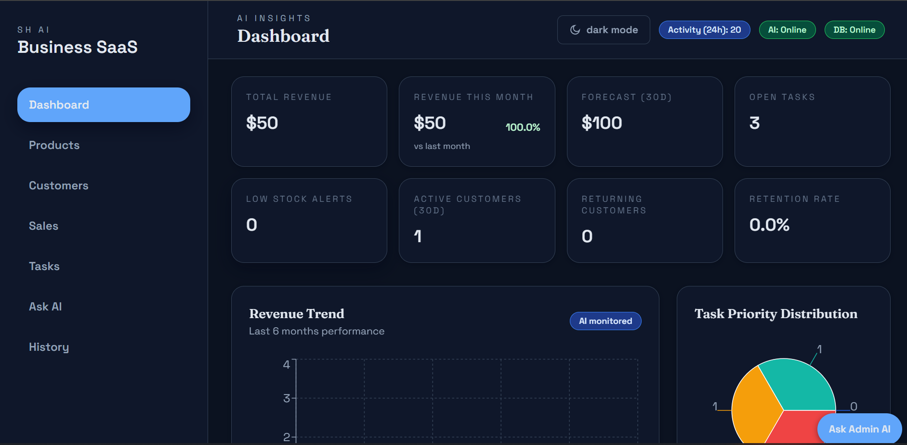
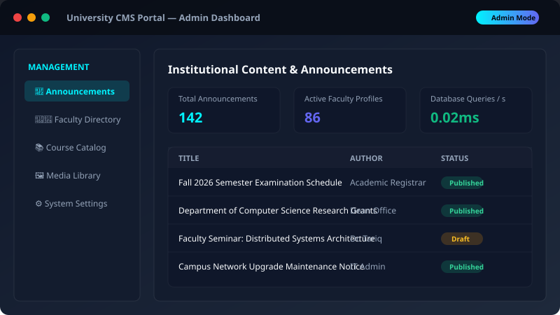
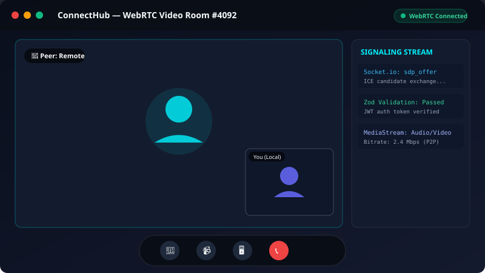

Custom Business Systems
Operational platforms for businesses that depend on spreadsheets, repeated admin, and fragmented tools.
- Dashboards
- Portals
- Internal tools
- Operational software
Custom business systems, SaaS products, internal tools, and workflow automation for businesses that have outgrown spreadsheets, disconnected tools, and manual coordination.
Internal tools, dashboards, portals, and workflows built around how the business actually runs.
Product builds with real architecture, business logic, and a clear path to working software.
APIs, triggers, notifications, and data synchronization that remove repetitive operational work.
Business-facing experience layers built to support sales, service, operations, and client engagement.
Information is spread across spreadsheets, email threads, WhatsApp, and personal memory, which creates delays and mistakes.
When lead data, approvals, follow-ups, status updates, and payments live in different places, teams lose visibility and customers wait longer.
Off-the-shelf tools rarely match the exact way a business actually operates. A custom system removes bottlenecks instead of adding more admin.
We build the systems behind the business — not just the pages people see.
Operational platforms for businesses that depend on spreadsheets, repeated admin, and fragmented tools.
Product builds designed for founders and teams who need an actual system with a solid technical foundation.
Systems that reduce manual follow-up and sync data across the tools your business already uses.
Business-facing digital products built for engagement, service delivery, and operational clarity.

A full-stack SaaS platform helping business owners manage inventory, customers, and sales through a natural-language workflow.

A content platform redesign moving a static university site into a structured system with dynamic content, admin control, and publishing workflows.

A real-time peer communication system built around session security, signaling, and live-room coordination.
We map the workflow, identify friction, and clarify what needs to change before building.
We align the scope, priorities, risks, and measurable product outcomes.
Development happens in visible milestones with working software as early as possible.
We validate progress against real business needs and adjust before launch.
We deploy, test, and hand over the system with clarity rather than chaos.
I build software for businesses that need better systems, clearer operations, and products that work in the real world. My focus is full-stack engineering, product thinking, and platforms that solve operational friction rather than just looking polished.
I consider the workflow, database, APIs, and user experience as one connected operating system.
I stay involved in the technical decisions that affect product quality, security, and long-term maintainability.
Business owners need realistic scope, direct technical communication, and a product that matches actual operational needs.
Whether you need a custom business system, a SaaS product, workflow automation, or a better customer-facing platform, we can look at the process and decide what is worth building.